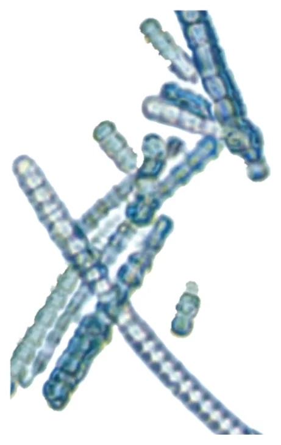
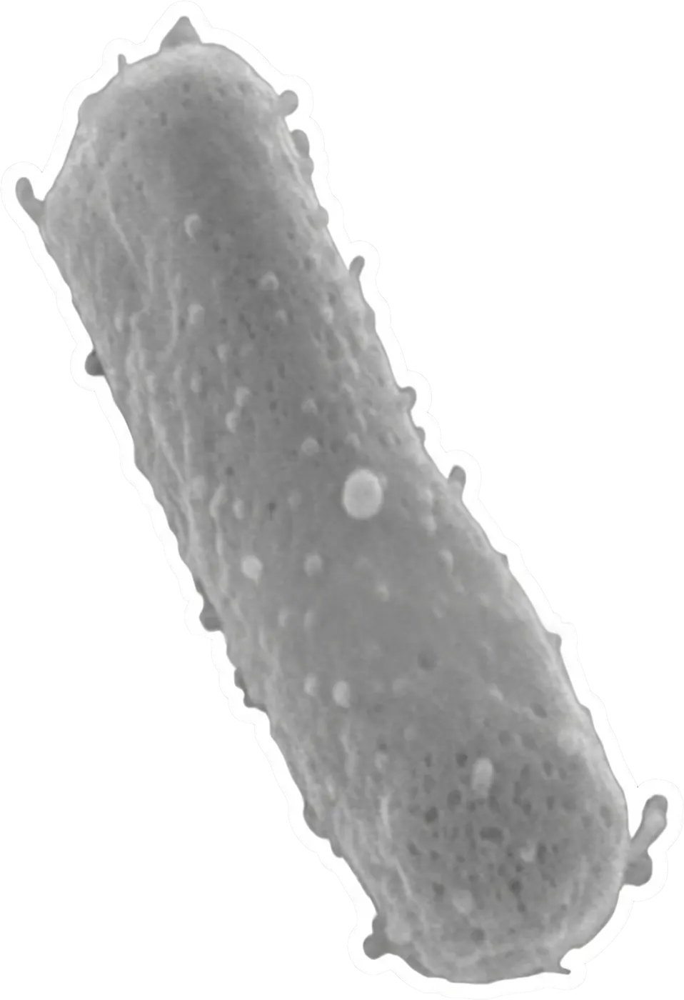
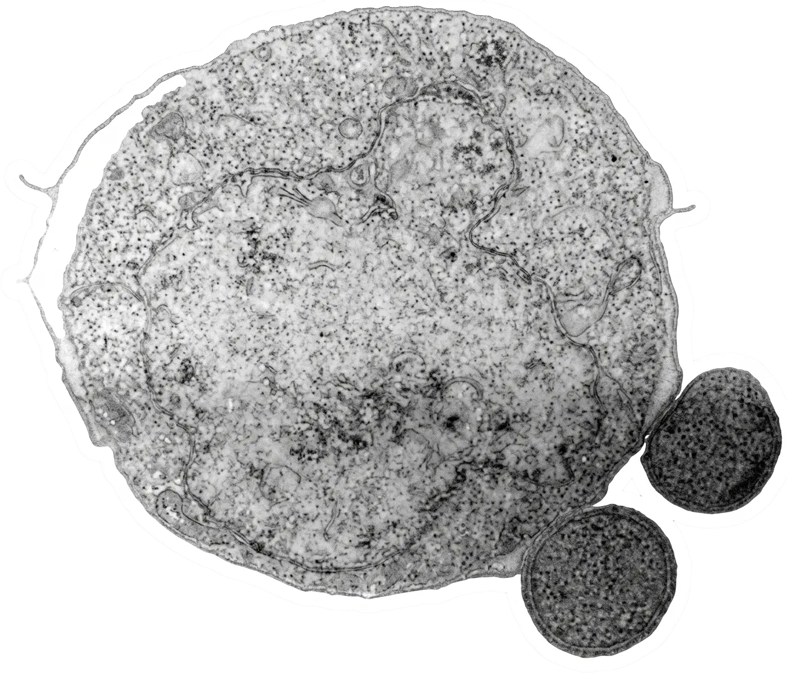
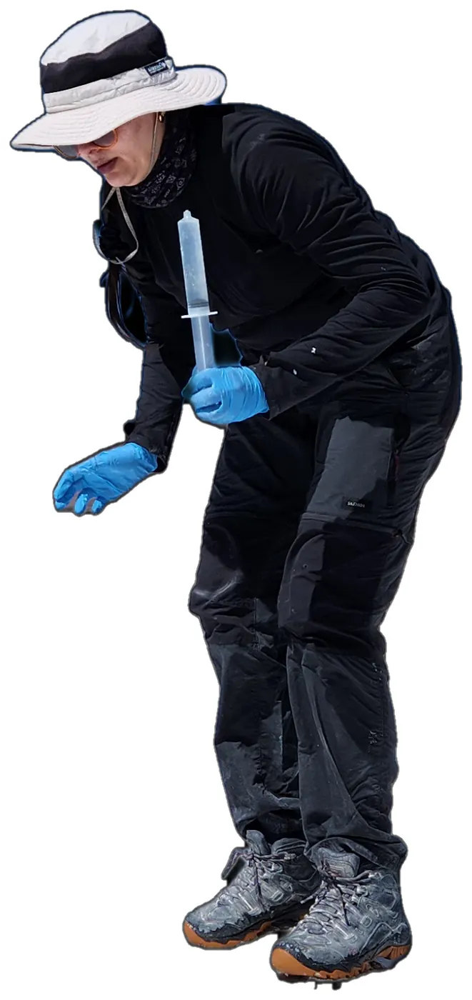
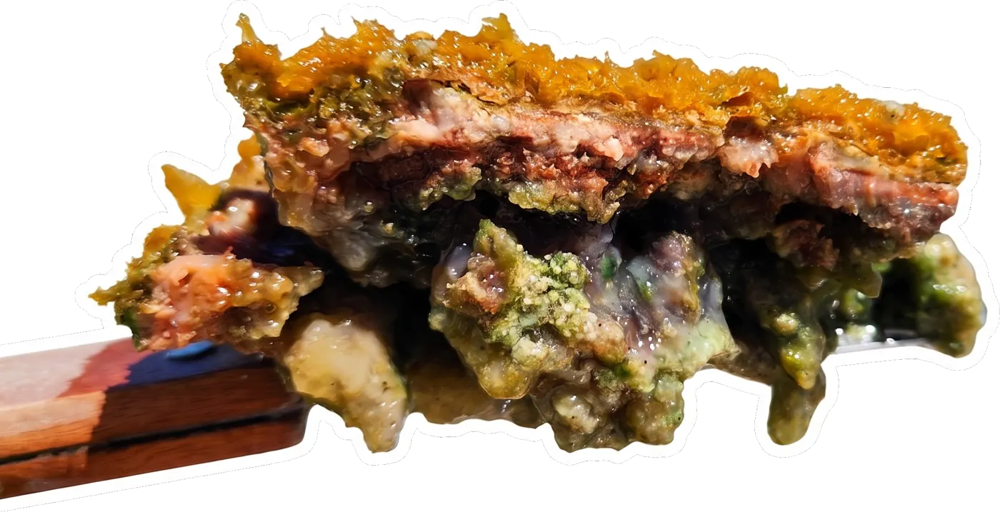

Pseudomonadota y Bacteroidota, dos grupos de bacterias, dominan casi todo el sistema.

Donde el agua es menos salada aparecen Cyanobacteriota y Chloroflexota, bacterias que aprovechan la luz del sol.
Donde la sal es extrema, aparecen arqueas halófilas como Halobacteriota y Nanoarchaeota.



Pero el lugar exacto donde se toma la muestra pesa incluso más que la sal misma.


Las arqueas no son bacterias: son otro dominio de la vida, especialistas en vivir al límite.